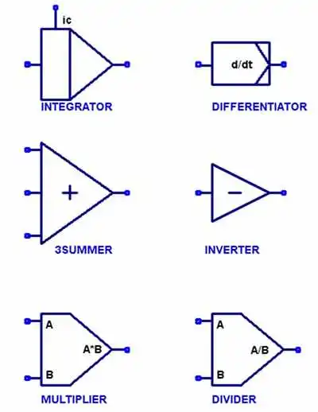
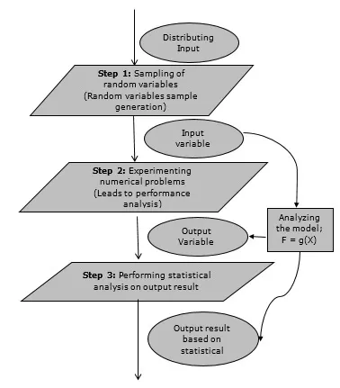
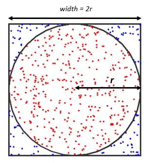

\frac{dy}{dt} = f(y,t) ...........................\text{(i)}
A linear differential equation of order n is a differential equation written in the following form.
a_n(x) d_n \frac{y}{dx^n} + a_{(n-1)}(x) + \frac{d_{(n-1)}(y)}{dx^(n-1)} + ... +a_1(x) \frac{dy}{dx}+ a_0(x)y = f(x)
where $$a_{n}(x), a_{(n-1)}(x), a_{1}(x), a_{0}(x)$$ are functions of x and f(x) is a function of x.
Example:
An equation describing the flow of heat in a three-dimensional body. There are four independent variables, representing the three dimensions and time and one dependent variable representing temperatures.
The general heat conduction equation:
\frac{d}{dx}(k.(\frac{dT}{dx})) + \frac{d}{dy}(k.(\frac{dT}{dy})) + \frac{d}{dz}(k.(\frac{dT}{dz})) + qv = \rho \space C_p \frac{dT}{dt}
This equation is also known as the Fourier-Biot equation and provides the basic tool for heat conduction analysis.
Interactive Systems
Interactive Systems are the computer systems characterized by significant amount of interaction between humans and the computer. Macintosh and Windows computer operating systems are prime examples of graphical interactive systems.
Editors, CAD-CAM(Computer Aided Design - Computer Aided Manufacture) system, and data entry systems are all computer systems involving a high degree of human - computer interaction.
Games and simulations are interactive systems. Web browsers and integrated development environments (IDE) are also examples of very complex interactive systems.
Feedback Systems
The system takes feedback from the output i.e input is coupled with output. A significant factor in the performance of many systems is that coupling occurs between the input and output of the system. The term feedback is used to describe the phenomenon.
The example of feedback system in which there is continuous controlin the aircraft system.
graph LR
G(Gyroscope)
C(Control Surface)
A(Air Frames)
G-->|"ε"|C-->A-->G
Here, the input is the desired aircraft heading, and the output is the actual heading. The gyroscope of the autopilot detects the difference between the two headings.
A feedback loop is established by using this difference to operate the control surface. Since the change in heading affects the signal used to control the heading, the difference between the desired signal $Q_t$ and the actual heading $Q_0$ is called the error signal.
Since it measures the extent to which the system deviates from the desired condition, it is denoted by 𝜖.
$$ \epsilon = Q_t - Q_0 $$
The torque acting on the system is given by:
$$ \text{Torque} = K\epsilon - D Q_0' $$
Since we also know that torque is related to angular acceleration as:
$$ \text{Torque} = I Q_0'' $$
From equations (1), (2), and (3), we obtain:
$$ I Q_0'' + D Q_0' + K Q_0 = K Q_t \quad \text{(Equation 4)} $$
$$Torque = K\epsilon - DQ_0'$$ $$IQ_0'' = K(Q_t - Q_0) - DQ_0'$$ $$IQ_0'' = KQ_t-KQ_0-DQ_0'$$ $$IQ_0''+DQ_0+KQ_0 = KQ_t$$
Dividing both sides by ( I ) and making the following substitutions:
$$ 2E\omega = \frac{D}{I}, \quad \omega^2 = \frac{K}{I} $$
We rewrite Equation (4) as:
$$ Q_0'' + \frac{D}{I} Q_0' + \frac{K}{I} Q_0 = \frac{K}{I} Q_t $$
Substituting the defined parameters:
$$ Q_0'' + 2E\omega Q_0' + \omega^2 Q_0 = \omega^2 Q_t \quad \text{(Equation 5)} $$
where ( E ) is the damping factor.
This is a second-order differential equation describing the system's response.
Q. Explain how do you update the clock time in system simulation.
CLock time is updated based on the following two models.
In this, the timer simulated by the computer is updated at a fixed time interval. The system is checked to see if any event has taken place during that interval. All the events which takes place during the time interval are considered to have occured simultaneously at the end of the interval.
It is also known as the next event model. In this the computer advances the time to the occurence of the next event. So it shifts from one event to the another event and the system state does not change in between. A track of the current time is kept when something interesting happens to the system.
flowchart TD
S(Start) --> R(Record Input Dates)
R --> G(Generate and store random data if any required)
G --> I(Initialize time t = 0)
I --> T(t = t + r)
T --> F[Find all those events that occur, update the system state]
F --> E[Extract their effects on statistics being gathered]
E --> D{End of statistics?}
D -- Yes --> O[Output desired statistics]
O --> X(Stop)
D -- No --> T
flowchart TD
S(Start) --> R[/Read Input Data/]
R --> G[Generate and store random data if any required]
G --> I[Initialize]
I --> F[Find next potential event, and its time of occurrence]
F --> L[Let the event occur, update the system state and clock]
L --> E[Extract its effect on statistics being gathered]
E --> D{End of simulation?}
D -- Yes --> O(Output derived statistics)
O --> X(Stop)
D -- No --> F
The non-stationary Poissons process is a Poissons process for which the arrival rate varies with time.
More specifically it can be defined as follows:
The counting process N(t) is a non-stationary poisson process if:
a. The process has independent increments.
b.
$$
P_r[N(t+dt) - N(t) ] =
\begin{cases}
1 - \lambda(t) dt, & \text{if } N(t+dt) - N(t) = 0 \
\lambda(t) dt, & \text{if } N(t+dt) - N(t) = 1 \
o(dt), & \text{if } N(t+dt) - N(t) > 1
\end{cases}
$$
Where lambda(t) = the arrival rate at time t
dt = differential sized interval
The definition is identical to the stationary Poissons process, with the exception that the arrival rate lambda(t) is now a function of time.
A counting process $N(t)$ is a stationary Poisson process with rate lambda if:
a. THe process has independent increments
b. The process has stationary increments
c.
$$
P_r[N(t+dt) - N(t) ] =
\begin{cases}
1 - \lambda dt, & \text{if } N(t+dt) - N(t) = 0 \
\lambda dt, & \text{if } N(t+dt) - N(t) = 1 \
o(dt), & \text{if } N(t+dt) - N(t) > 1
\end{cases}
$$
A non-stationary Poisson process can be transferred into a stationary Poisson process with arrival rate 1.
Q. Define arrival pattern. Explain non-stationary Poisson process.
Arrival defines the way customers enter the system. Mostly the arrivals are random with random intervals between two adjacent arrivals.
Typically the arrival is described by a random distribution of intervals also called arrival pattern.
Arrivals may occur at scheduled times or at random times. When at random times, the inter arriva time are usually characterized by a probability distribution and most important model for random arrival i.e. the poisson process. IN schedule arrival interarrival time of customer are constant.
Q. Differentiate between clock time and simulation time used in system simulation.*
| Clock Time | Simulation Time |
|---|---|
| It is the total amount of time for which the CPU remains active. | It is the total amount of time that CPU spends for simulation. |
| Clock time is measured continuously through all the operations that a CPU undergoes. | Simulation time only deals with the amount of time elevated for simulation. |
| It is usually more. | It is usually less. |
Example:
Let us take an example where CPU is running for 6 seconds and now it performs a calculation for 0.01 second and stops the calculation, again the CPU runs for 5 more seconds.
So, Clock Time = Total time CPU is active = 6 + 5 = 11 seconds
Similarly, Simulation Time = Total time CPU spends for calculation = 0.01 seconds
Q. Explain Hybrid simulation with example.
In reality, the system is of neither a pure continuous nor a pure discrete nature. For simulating such systems, the combination of analog and digital computers is used. Such setup is known as hybrid Computers.
The simulation provided by the hybrid computers is known as hybrid simulation.
The form taken by hybrid simulation depends upon the application. One computer may be simulating the system being studied while other is providing a simulation of the environment in which the system operates.
It is also possible that the system being simulated is an interconnection of continuous and discrete systems, which can be best modeled by an analog and digital computer being linked together.
The major difficulty in use of hybrid simulation is it requires high speed converters to transform signals from analog to digital form and vice-versa.
Q. Explain Monte Carlo Simulation with example.
Monte Carlo simulation is a computerized mathematical technique to generate random sample data based on some known distribution for numerical experiments.
This method is applied to risk quantitative analysis, decision-making problems. This method is used by the professionals of various profiles like finance, project management, energy, manufacturing, engineering, research and development, insurance, oil & gas, transportation, and many more.
Following are the three important characteristics of Monte Carlo Simulation:

Fig 03: Flowchart of Monte Carlo Simulation
Example:
Determine the value of PI(π) using Monte Carlo Simulation.

$$ \frac{\text{Area of quadrant of circle}}{Area\ of\ Rectangle} = \frac{Number\ of\ points\ inside\ the\ curve}{Number\ of\ points\ inside\ the\ rectangle} $$
$$ or, \frac{\frac{1}{4} * π * r^2}{r^2} = \frac{n}{N} $$
$$ or, π = \frac{4n}{N} $$
We use random number generator method to determine the sample points that lie inside or outside the curve. let (x0,y0) be an initial guess for the sample point then from a linear congruential method of random number generation
$$ x_{i+1} = (ax_i + c) \mod m $$
$$ y_{i+1} = (ay_i + c) \mod m $$
where a and c are constants, m is the upper limit of generated random numbers. $$\text{If } y \leq y_i \text{ then increment } n.$$